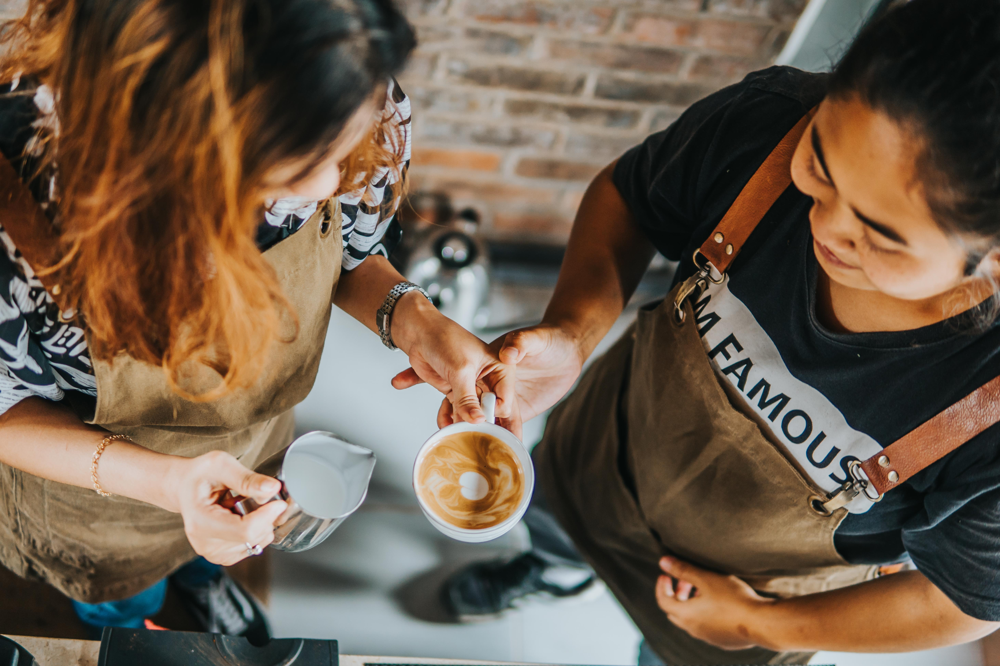
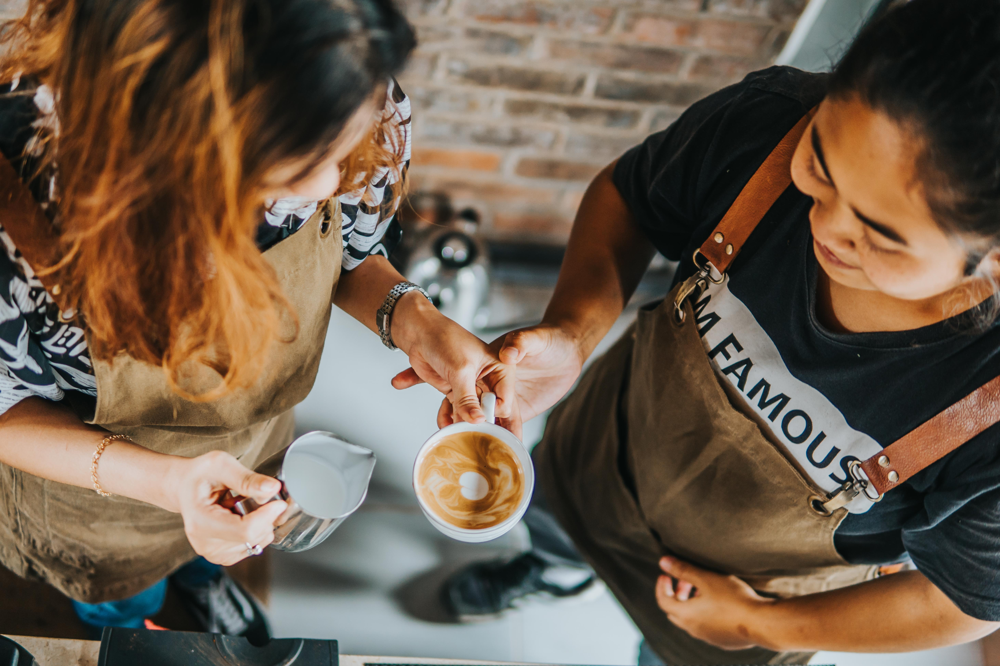

Welcome to Sippin' Coffee Bar, where you will find the best house brewed coffee and specialty drinks in all of San Luis Obispo! Sippin' was found by Cal Poly student, Brenica Sipin, who is passionate about coffee and bringing people together.
Contact us at (805) 729-8582, or shoot us an email at sippincoffee@gmail.com!


 
